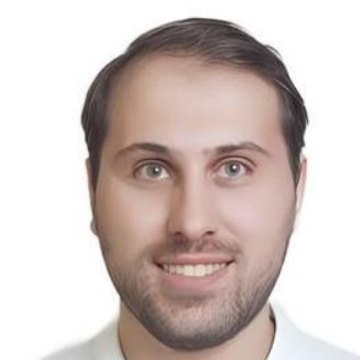
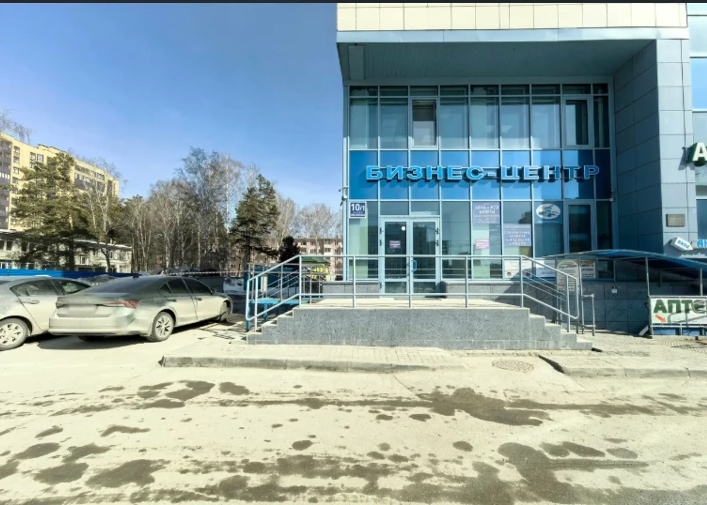
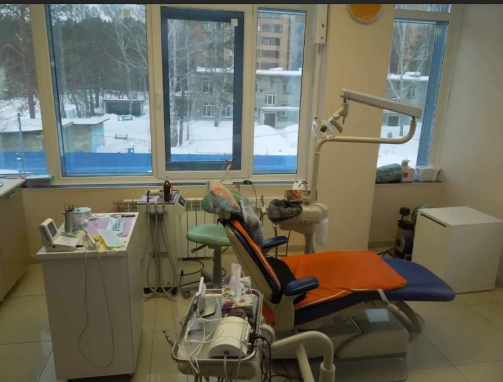
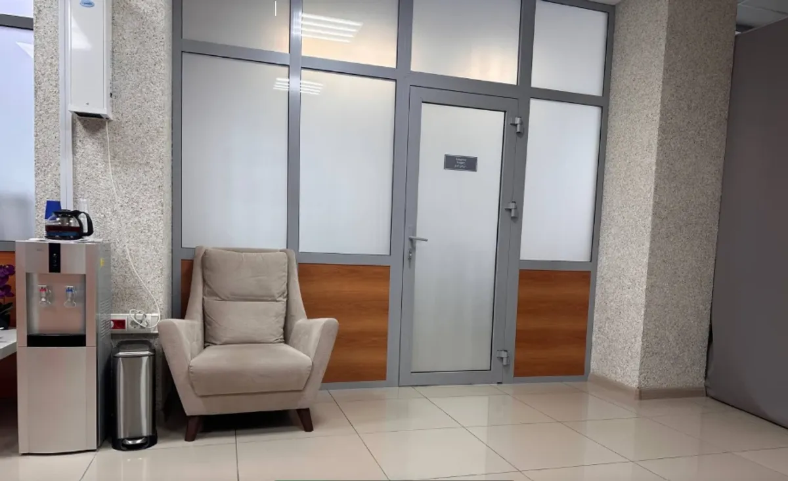
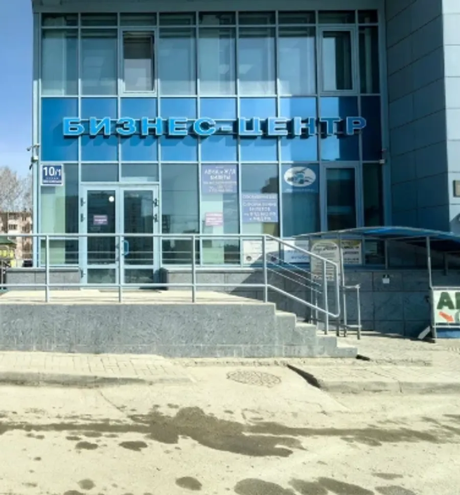
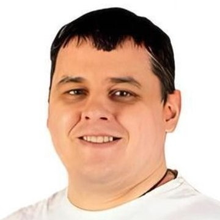

Беридзе Кахабер РоналиевичСтоматолог-ортопед, стоматолог-имплантолог, стоматолог-хирургСтаж 16 лет
Имплантация, лечение зубов и хирургия
3 врача в Академгородке: имплантация, лечение, хирургия

Прайс по позициям уточняйте при записи, точную сумму называют после осмотра.
Есть противопоказания, проконсультируйтесь с врачом.
Через форму на сайте или в WhatsApp. Выбираете удобные день и время.
Врач смотрит, объясняет, что происходит и какие есть варианты.
Решаете вместе, с чего начать и в каком порядке, особенно если нужна имплантация.
Этапы идут по плану, а врач отвечает на вопросы по ходу.



Три врача: имплантолог, хирург и стоматолог.


Пациенты пишут, что врач всё объясняет и перестаёшь бояться визитов.
В отзывах отмечают чистоту, оснащение и приветливых администраторов.
Пациенты описывают установку имплантов поэтапно: от плана до коронок.
По будням с 9 до 21, по выходным с 9 до 17 (по данным ПроДокторов).
«Из всех стоматологий в академе где я был эта однозначно лучшая. Удивительно доброжелательный коллектив. Врач всегда все подробно рассказывает.»
Vyacheslav Rusakov · 11 сентября 2026
«Первая в моей жизни клиника, где я перестала бояться!»
Елена Куграшова · 8 октября 2026
«Очень чисто, красиво, приятные девушки администраторы, которые ответят на все вопросы.»
Валерия Бауэр · 5 сентября 2026
Отзывы с карточки на 2ГИС, без правок.
По данным ПроДокторов, клиника работает с системами Straumann (Швейцария) и Osstem (Южная Корея).
Гнесиных, 10/1, бизнес-центр «Гнесинка», офис 201. От остановки «Магазин № 12» идти 4–5 минут.
Цену называют после осмотра. Прайс по позициям уточняйте при записи.
По данным ПроДокторов: будни с 9:00 до 21:00, выходные с 9:00 до 17:00.